2
1 And again he entered into Capernaum after some days; and it was noised that he was in the house. 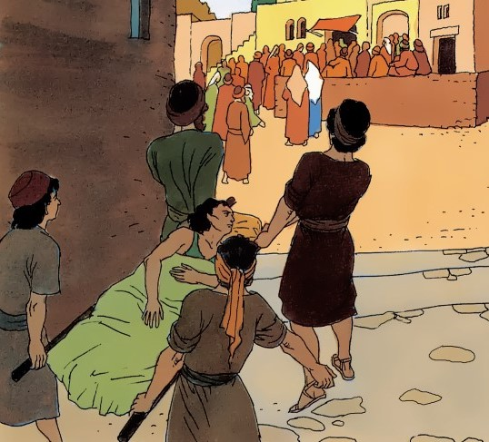
2 And straightway many were gathered together, insomuch that there was no room to receive them, no, not so much as about the door: and he preached the word unto them. 3 And they come unto him, bringing one sick of the palsy, which was borne of four. 4 And when they could not come nigh unto him for the press, they uncovered the roof where he was: and when they had broken it up, they let down the bed wherein the sick of the palsy lay.
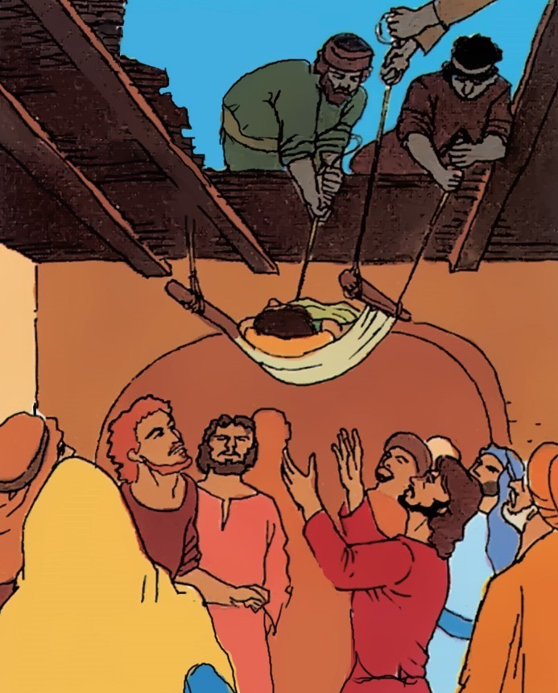
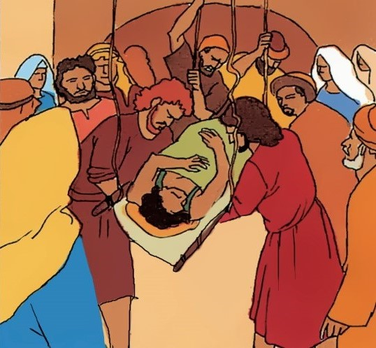
7 Why doth this man thus speak blasphemies? who can forgive sins but God only? 8 And immediately, when Jesus perceived in his spirit that they so reasoned within themselves, he said unto them, Why reason ye these things in your hearts?
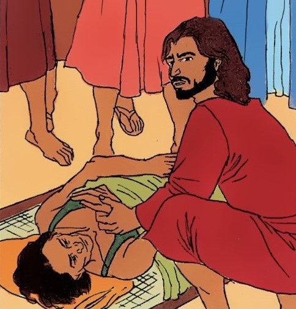
9 Whether is it easier to say to the sick of the palsy, Thy sins be forgiven thee; or to say, Arise, and take up thy bed, and walk? 10 But that ye may know that the Son of man hath power on earth to forgive sins, (he saith to the sick of the palsy,) 11 I say unto thee, Arise, and take up thy bed, and go thy way into thine house. 12 And immediately he arose, took up the bed, and went forth before them all; insomuch that they were all amazed, and glorified God, saying, We never saw it on this fashion.
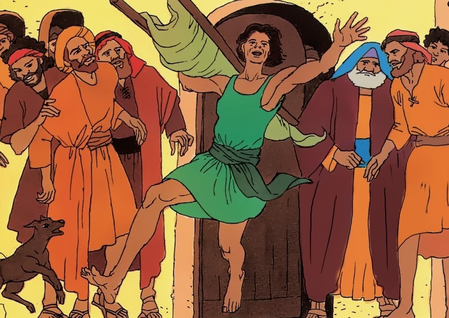
13 And he went forth again by the sea side; and all the multitude resorted unto him, and he taught them. 14 And as he passed by, he saw Levi the son of Alpheus sitting at the receipt of custom, and said unto him, Follow me. And he arose and followed him.
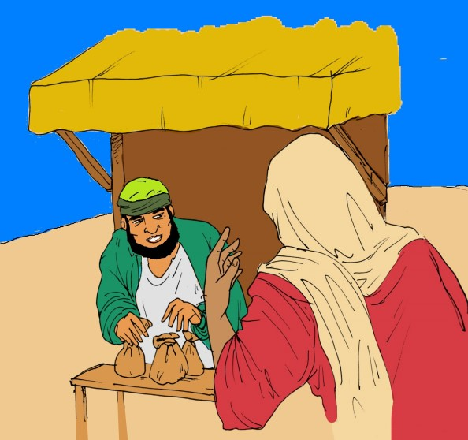
15 And it came to pass, that as Jesus sat at meat in his house, many publicans and sinners sat also together with Jesus and his disciples: for there were many, and they followed him.
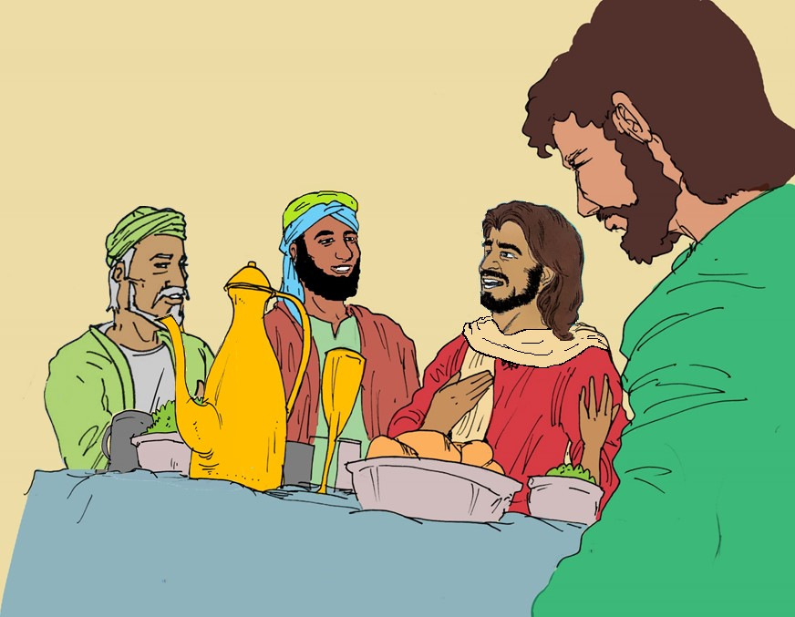
16 And when the scribes and Pharisees saw him eat with publicans and sinners, they said unto his disciples, How is it that he eateth and drinketh with publicans and sinners?
17 When Jesus heard it, he saith unto them, They that are whole have no need of the physician, but they that are sick: I came not to call the righteous, but sinners to repentance.
18 And the disciples of John and of the Pharisees used to fast: and they come and say unto him, Why do the disciples of John and of the Pharisees fast, but thy disciples fast not?
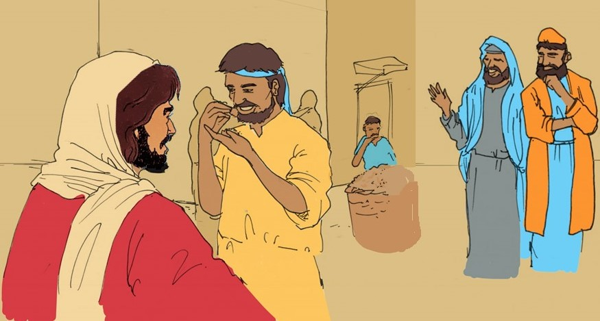
19 And Jesus said unto them, Can the children of the bridechamber fast, while the bridegroom is with them? as long as they have the bridegroom with them, they cannot fast.
20 But the days will come, when the bridegroom shall be taken away from them, and then shall they fast in those days. 21 No man also seweth a piece of new cloth on an old garment: else the new piece that filled it up taketh away from the old, and the rent is made worse.
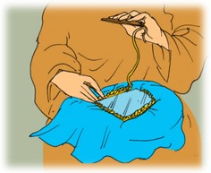
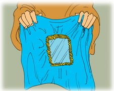
22 And no man putteth new wine into old bottles: else the new wine doth burst the bottles, and the wine is spilled, and the bottles will be marred: but new wine must be put into new bottles.
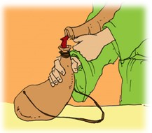
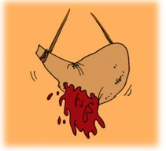
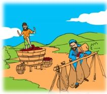
23 And it came to pass, that he went through the corn fields on the sabbath day; and his disciples began, as they went, to pluck the ears of corn.
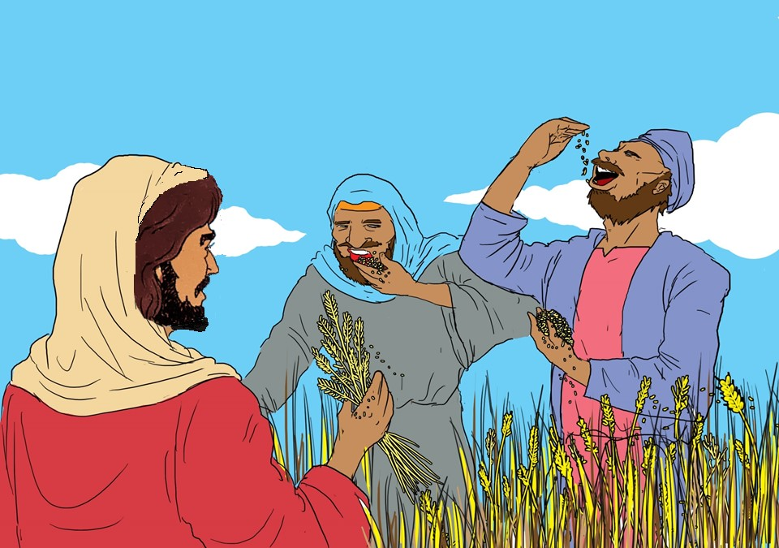
24 And the Pharisees said unto him, Behold, why do they on the sabbath day that which is not lawful? 25 And he said unto them, Have ye never read what David did, when he had need, and was a hungred, he, and they that were with him?
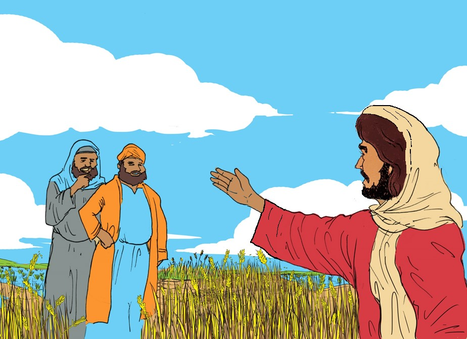
26 How he went into the house of God in the days of Abiathar the high priest, and did eat the shewbread, which is not lawful to eat but for the priests, and gave also to them which were with him? 27 And he said unto them, The sabbath was made for man, and not man for the sabbath: 28 therefore the Son of man is Lord also of the sabbath.